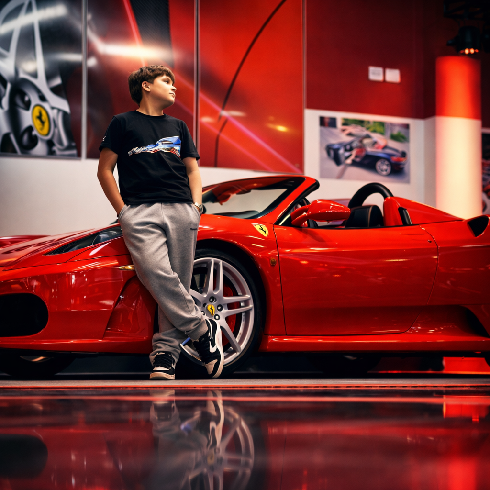

VICENZO
Estudante de Informática transformando ideias em código criativo e interfaces que impressionam.
Role para baixoSobre Mim

Sou Vicenzo, estudante do 1º ano do ensino médio com curso técnico em Informática. Descobri na programação uma forma de transformar imaginação em realidade — gosto de construir interfaces que não apenas funcionam, mas causam impressão.
Atuo como desenvolvedor Full Stack: no front-end crio experiências fluidas com React, Next.js e TypeScript; no back-end construo APIs, autenticação e trabalho com bancos de dados. Paralelamente, estou finalizando a base em linguagem C e já iniciei estudos em Python eJava para expandir minha visão de sistemas e algoritmos.
Projetos
Aplicação web completa para organizar tarefas em colunas (Kanban), com arrastar e soltar, prioridades e armazenamento no navegador.
Ver no GitHubTaskFlow
Gerenciador de tarefas com drag-and-drop e persistência local.
Landing page futurista com cursor customizado, tilt 3D, aurora animada e microinterações. Construído como vitrine de habilidades front-end.
Ver no GitHubNeoPortfolio
Portfólio 3D com animações avançadas de scroll e parallax.
Bot de chat com histórico, streaming de respostas e UI responsiva. Backend em Node procesa as mensagens e integra com modelo de linguagem.
Ver no GitHubOraculoBot
Chatbot conversacional conectado a uma API de IA.
Sistema completo de gestão: produtos, entradas/saídas, dashboard com gráficos e exportação de relatórios. Foco em lógica de negócio e dados.
Ver no GitHubStockSys
Sistema de controle de estoque com cadastro e relatórios.